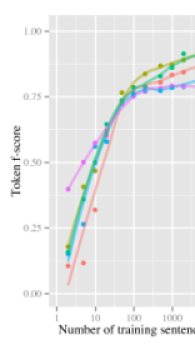
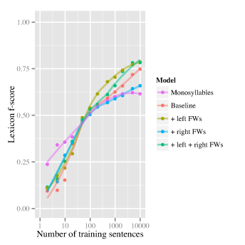
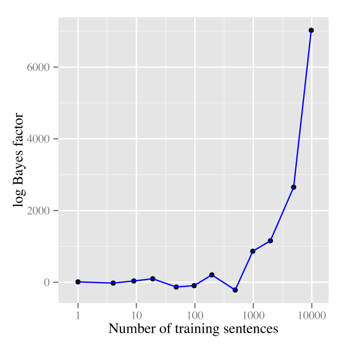

Modelling function words improves unsupervised word segmentation
Department of Computing, Macquarie University, Sydney, Australia
Santa Fe Institute, Santa Fe, New Mexico, USA
Ecole Normale Supérieure, Paris, France
Centre National de la Recherche Scientifique, Paris, France
Ecole des Hautes Etudes en Sciences Sociales, Paris, France
Department of Linguistics, Macquarie University, Sydney, Australia
Abstract
Inspired by experimental psychological findings suggesting that function words play a special role in word learning, we make a simple modification to an Adaptor Grammar based Bayesian word segmentation model to allow it to learn sequences of monosyllabic “function words” at the beginnings and endings of collocations of (possibly multi-syllabic) words. This modification improves unsupervised word segmentation on the standard corpus of child-directed English by more than 4% token f-score compared to a model identical except that it does not special-case “function words”, setting a new state-of-the-art of 92.4% token f-score. Our function word model assumes that function words appear at the left periphery, and while this is true of languages such as English, it is not true universally. We show that a learner can use Bayesian model selection to determine the location of function words in their language, even though the input to the model only consists of unsegmented sequences of phones. Thus our computational models support the hypothesis that function words play a special role in word learning.
SIL/I”
1 Introduction
Over the past two decades psychologists have investigated the role that function words might play in human language acquisition. Their experiments suggest that function words play a special role in the acquisition process: children learn function words before they learn the vast bulk of the associated content words, and they use function words to help identify context words.
The goal of this paper is to determine whether computational models of human language acquisition can provide support for the hypothesis that function words are treated specially in human language acquisition. We do this by comparing two computational models of word segmentation which differ solely in the way that they model function words. Following and our word segmentation models identify word boundaries from unsegmented sequences of phonemes corresponding to utterances, effectively performing unsupervised learning of a lexicon. For example, given input consisting of unsegmented utterances such as the following:
j u w É n t t u s i ð É b Ê k
a word segmentation model should segment this as ju wÉnt tu si Ã°É bÊk, which is the IPA representation of “you want to see the book”.
We show that a model equipped with the ability to learn some rudimentary properties of the target language’s function words is able to learn the vocabulary of that language more accurately than a model that is identical except that it is incapable of learning these generalisations about function words. This suggests that there are acquisition advantages to treating function words specially that human learners could take advantage of (at least to the extent that they are learning similar generalisations as our models), and thus supports the hypothesis that function words are treated specially in human lexical acquisition. As a reviewer points out, we present no evidence that children use function words in the way that our model does, and we want to emphasise we make no such claim. While absolute accuracy is not directly relevant to the main point of the paper, we note that the models that learn generalisations about function words perform unsupervised word segmentation at 92.5% token f-score on the standard corpus, which improves the previous state-of-the-art by more than 4%.
As a reviewer points out, the changes we make to our models to incorporate function words can be viewed as “building in” substantive information about possible human languages. The model that achieves the best token f-score expects function words to appear at the left edge of phrases. While this is true for languages such as English, it is not true universally. By comparing the posterior probability of two models — one in which function words appear at the left edges of phrases, and another in which function words appear at the right edges of phrases — we show that a learner could use Bayesian posterior probabilities to determine that function words appear at the left edges of phrases in English, even though they are not told the locations of word boundaries or which words are function words.
This paper is structured as follows. Section 2 describes the specific word segmentation models studied in this paper, and the way we extended them to capture certain properties of function words. The word segmentation experiments are presented in section 3, and section 4 discusses how a learner could determine whether function words occur on the left-periphery or the right-periphery in the language they are learning. Section 5 concludes and describes possible future work. The rest of this introduction provides background on function words, the Adaptor Grammar models we use to describe lexical acquisition and the Bayesian inference procedures we use to infer these models.
1.1 Psychological evidence for the role of function words in word learning
Traditional descriptive linguistics distinguishes function words, such as determiners and prepositions, from content words, such as nouns and verbs, corresponding roughly to the distinction between functional categories and lexical categories of modern generative linguistics [].
Function words differ from content words in at least the following ways:
- 1.
there are usually far fewer function word types than content word types in a language
- 2.
function word types typically have much higher token frequency than content word types
- 3.
function words are typically morphologically and phonologically simple (e.g., they are typically monosyllabic)
- 4.
function words typically appear in peripheral positions of phrases (e.g., prepositions typically appear at the beginning of prepositional phrases)
- 5.
each function word class is associated with specific content word classes (e.g., determiners and prepositions are associated with nouns, auxiliary verbs and complementisers are associated with main verbs)
- 6.
semantically, content words denote sets of objects or events, while function words denote more complex relationships over the entities denoted by content words
- 7.
historically, the rate of innovation of function words is much lower than the rate of innovation of content words (i.e., function words are typically “closed class”, while content words are “open class”)
Properties 1–4 suggest that function words might play a special role in language acquisition because they are especially easy to identify, while property 5 suggests that they might be useful for identifying lexical categories. The models we study here focus on properties 3 and 4, in that they are capable of learning specific sequences of monosyllabic words in peripheral (i.e., initial or final) positions of phrase-like units.
A number of psychological experiments have shown that infants are sensitive to the function words of their language within their first year of life [], often before they have experienced the “word learning spurt”. Crucially for our purpose, infants of this age were shown to exploit frequent function words to segment neighboring content words []. In addition, 14 to 18-month-old children were shown to exploit function words to constrain lexical access to known words â- for instance, they expect a noun after a determiner []. In addition, it is plausible that function words play a crucial role in children’s acquisition of more complex syntactic phenomena [], so it is interesting to investigate the roles they might play in computational models of language acquisition.
1.2 Adaptor grammars
Adaptor grammars are a framework for Bayesian inference of a certain class of hierarchical non-parametric models []. They define distributions over the trees specified by a context-free grammar, but unlike probabilistic context-free grammars, they “learn” distributions over the possible subtrees of a user-specified set of “adapted” nonterminals. (Adaptor grammars are non-parametric, i.e., not characterisable by a finite set of parameters, if the set of possible subtrees of the adapted nonterminals is infinite). Adaptor grammars are useful when the goal is to learn a potentially unbounded set of entities that need to satisfy hierarchical constraints. As section 2 explains in more detail, word segmentation is such a case: words are composed of syllables and belong to phrases or collocations, and modelling this structure improves word segmentation accuracy.
Adaptor Grammars are formally defined in , which should be consulted for technical details. Adaptor Grammars (AGs) are an extension of Probabilistic Context-Free Grammars (PCFGs), which we describe first. A Context-Free Grammar (CFG) consists of disjoint finite sets of nonterminal symbols and terminal symbols , a finite set of rules of the form where and , and a start symbol . (We assume there are no “-rules” in , i.e., we require that for each ).
A Probabilistic Context-Free Grammar (PCFG) is a quintuple where , , and are the nonterminals, terminals, rules and start symbol of a CFG respectively, and is a vector of non-negative reals indexed by that satisfy for each , where is the set of rules expanding .
Informally, is the probability of a node labelled expanding to a sequence of nodes labelled , and the probability of a tree is the product of the probabilities of the rules used to construct each non-leaf node in it. More precisely, for each a PCFG associates distributions over the set of trees generated by as follows:
If (i.e., if is a terminal) then is the distribution that puts probability 1 on the single-node tree labelled .
If (i.e., if is a nonterminal) then:
| (1) |
where is the subset of rules in expanding nonterminal , and:
That is, is a distribution over the set of trees generated by nonterminal , where each subtree is generated independently from . The PCFG generates the distribution over the set of trees generated by the start symbol ; the distribution over the strings it generates is obtained by marginalising over the trees.
In a Bayesian PCFG one puts Dirichlet priors on the rule probability vector , such that there is one Dirichlet parameter for each rule . There are Markov Chain Monte Carlo (MCMC) and Variational Bayes procedures for estimating the posterior distribution over rule probabilities and parse trees given data consisting of terminal strings alone [].
PCFGs can be viewed as recursive mixture models over trees. While PCFGs are expressive enough to describe a range of linguistically-interesting phenomena, PCFGs are parametric models, which limits their ability to describe phenomena where the set of basic units, as well as their properties, are the target of learning. Lexical acqusition is an example of a phenomenon that is naturally viewed as non-parametric inference, where the number of lexical entries (i.e., words) as well as their properties must be learnt from the data.
It turns out there is a straight-forward modification to the PCFG distribution (1) that makes it suitably non-parametric. As explain, by inserting a Dirichlet Process (DP) or Pitman-Yor Process (PYP) into the generative mechanism (1) the model “concentrates” mass on a subset of trees []. Specifically, an Adaptor Grammar identifies a subset of adapted nonterminals. In an Adaptor Grammar the unadapted nonterminals expand via (1), just as in a PCFG, but the distributions of the adapted nonterminals are “concentrated” by passing them through a DP or PYP:
Here and are parameters of the PYP associated with the adapted nonterminal . As explain, such Pitman-Yor Processes naturally generate power-law distributed data.
Informally, Adaptor Grammars can be viewed as caching entire subtrees of the adapted nonterminals. Roughly speaking, the probability of generating a particular subtree of an adapted nonterminal is proportional to the number of times that subtree has been generated before. This “rich get richer” behaviour causes the distribution of subtrees to follow a power-law (the power is specified by the parameter of the PYP). The PCFG rules expanding an adapted nonterminal define the “base distribution” of the associated DP or PYP, and the and parameters determine how much mass is reserved for “new” trees.
There are several different procedures for inferring the parse trees and the rule probabilities given a corpus of strings: describe a MCMC sampler and describe a Variational Bayes procedure. We use the MCMC procedure here since this has been successfully applied to word segmentation problems in previous work [].
2 Word segmentation with Adaptor Grammars
Perhaps the simplest word segmentation model is the unigram model, where utterances are modeled as sequences of words, and where each word is a sequence of segments []. A unigram model can be expressed as an Adaptor Grammar with one adapted non-terminal (we indicate adapted nonterminals by underlining them in grammars here; regular expressions are expanded into right-branching productions).
| (2) | ||||
| (3) |
The first rule (2) says that a sentence consists of one or more s, while the second rule (3) states that a consists of a sequence of one or more s; we assume that there are rules expanding into all possible phones. Because is an adapted nonterminal, the adaptor grammar memoises subtrees, which corresponds to learning the phone sequences for the words of the language.
The more sophisticated Adaptor Grammars discussed below can be understood as specialising either the first or the second of the rules in (2–3). The next two subsections review the Adaptor Grammar word segmentation models presented in and : section 2.1 reviews how phonotactic syllable-structure constraints can be expressed with Adaptor Grammars, while section 2.2 reviews how phrase-like units called “collocations” capture inter-word dependencies. Section 2.3 presents the major novel contribution of this paper by explaining how we modify these adaptor grammars to capture some of the special properties of function words.
2.1 Syllable structure and phonotactics
The rule (3) models words as sequences of independently generated phones: this is what called the “monkey model” of word generation (it instantiates the metaphor that word types are generated by a monkey randomly banging on the keys of a typewriter). However, the words of a language are typically composed of one or more syllables, and explicitly modelling the internal structure of words typically improves word segmentation considerably.
suggested replacing (3) with the following model of word structure:
| (4) | ||||
| (5) | ||||
| (6) | ||||
| (7) | ||||
| (8) | ||||
| (9) |
Here and below superscripts indicate iteration (e.g., a consists of 1 to 4 s), while an consists of an unbounded number of s), while parentheses indicate optionality (e.g., a consists of an obligatory followed by an optional ). We assume that there are rules expanding and to the set of all consonants and vowels respectively (this amounts to assuming that the learner can distinguish consonants from vowels). Because , and are adapted, this model learns the possible syllable onsets, nucleii and coda of the language, even though neither syllable structure nor word boundaries are explicitly indicated in the input to the model.
The model just described assumes that word-internal syllables have the same structure as word-peripheral syllables, but in languages such as English word-peripheral onsets and codas can be more complex than the corresponding word-internal onsets and codas. For example, the word “string” begins with the onset cluster str, which is relatively rare word-internally. showed that word segmentation accuracy improves if the model can learn different consonant sequences for word-inital onsets and word-final codas. It is easy to express this as an Adaptor Grammar: (4) is replaced with (10–11) and (12–17) are added to the grammar.
| (10) | ||||
| (11) | ||||
| (12) | ||||
| (13) | ||||
| (14) | ||||
| (15) | ||||
| (16) | ||||
| (17) |
In this grammar the suffix “” indicates a word-initial element, and “” indicates a word-final element. Note that the model simply has the ability to learn that different clusters can occur word-peripherally and word-internally; it is not given any information about the relative complexity of these clusters.
2.2 Collocation models of inter-word dependencies
point out the detrimental effect that inter-word dependencies can have on word segmentation models that assume that the words of an utterance are independently generated. Informally, a model that generates words independently is likely to incorrectly segment multi-word expressions such as “the doggie” as single words because the model has no way to capture word-to-word dependencies, e.g., that “doggie” is typically preceded by “the”. Goldwater et al show that word segmentation accuracy improves when the model is extended to capture bigram dependencies.
Adaptor grammar models cannot express bigram dependencies, but they can capture similiar inter-word dependencies using phrase-like units that calls collocations. showed that word segmentation accuracy improves further if the model learns a nested hierarchy of collocations. This can be achieved by replacing (2) with (18–21).
| (18) | ||||
| (19) | ||||
| (20) | ||||
| (21) |
Informally, , and define a nested hierarchy of phrase-like units. While not designed to correspond to syntactic phrases, by examining the sample parses induced by the Adaptor Grammar we noticed that the collocations often correspond to noun phrases, prepositional phrases or verb phrases. This motivates the extension to the Adaptor Grammar discussed below.
2.3 Incorporating “function words” into collocation models
The starting point and baseline for our extension is the adaptor grammar with syllable structure phonotactic constraints and three levels of collocational structure (5-21), as prior work has found that this yields the highest word segmentation token f-score [].
Our extension assumes that the constituents are in fact phrase-like, so we extend the rules (19–21) to permit an optional sequence of monosyllabic words at the left edge of each of these constituents. Our model thus captures two of the properties of function words discussed in section 1.1: they are monosyllabic (and thus phonologically simple), and they appear on the periphery of phrases. (We put “function words” in scare quotes below because our model only approximately captures the linguistic properties of function words).
Specifically, we replace rules (19–21) with the following sequence of rules:
| (22) | ||||
| (23) | ||||
| (24) | ||||
| (25) | ||||
| (26) | ||||
| (27) | ||||
| (28) | ||||
| (29) | ||||
| (30) |
This model memoises (i.e., learns) both the individual “function words” and the sequences of “function words” that modify the constituents. Note also that “function words” expand directly to , which in turn expands to a monosyllable with a word-initial onset and word-final coda. This means that “function words” are memoised independently of the “content words” that expands to; i.e., the model learns distinct “function word” and “content word” vocabularies. Figure 1 depicts a sample parse generated by this grammar.
This grammar builds in the fact that function words appear on the left periphery of phrases. This is true of languages such as English, but is not true cross-linguistically. For comparison purposes we also include results for a mirror-image model that permits “function words” on the right periphery, a model which permits “function words” on both the left and right periphery (achieved by changing rules 22–24), as well as a model that analyses all words as monosyllabic.
Section 4 explains how a learner could use Bayesian model selection to determine that function words appear on the left periphery in English by comparing the posterior probability of the data under our “function word” Adaptor Grammar to that obtained using a grammar which is identical except that rules (22–24) are replaced with the mirror-image rules in which “function words” are attached to the right periphery.


3 Word segmentation results
This section presents results of running our Adaptor Grammar models on subsets of the corpus of child-directed English. We use the Adaptor Grammar software available from http://web.science.mq.edu.au/~mjohnson/ with the same settings as described in , i.e., we perform Bayesian inference with “vague” priors for all hyperparameters (so there are no adjustable parameters in our models), and perform 8 different MCMC runs of each condition with table-label resampling for 2,000 sweeps of the training data. At every 10th sweep of the last 1,000 sweeps we use the model to segment the entire corpus (even if it is only trained on a subset of it), so we collect 800 sample segmentations of each utterance. The most frequent segmentation in these 800 sample segmentations is the one we score in the evaluations below.
| Model |
|
|
| ||||||
|---|---|---|---|---|---|---|---|---|---|
| Baseline | 0.872 | 0.918 | 0.956 | ||||||
| + left FWs | 0.924 | 0.935 | 0.990 | ||||||
| + left + right FWs | 0.912 | 0.957 | 0.953 |
3.1 Word segmentation with “function word” models
Here we evaluate the word segmentations found by the “function word” Adaptor Grammar model described in section 2.3 and compare it to the baseline grammar with collocations and phonotactics from . Figure 2 presents the standard token and lexicon (i.e., type) f-score evaluations for word segmentations proposed by these models [], and Table 1 summarises the token and lexicon f-scores for the major models discussed in this paper. It is interesting to note that adding “function words” improves token f-score by more than 4%, corresponding to a 40% reduction in overall error rate.
When the training data is very small the Monosyllabic grammar produces the highest accuracy results, presumably because a large proportion of the words in child-directed speech are monosyllabic. However, at around 25 sentences the more complex models that are capable of finding multisyllabic words start to become more accurate.
It’s interesting that after about 1,000 sentences the model that allows “function words” only on the right periphery is considerably less accurate than the baseline model. Presumably this is because it tends to misanalyse multi-syllabic words on the right periphery as sequences of monosyllabic words.
The model that allows “function words” only on the left periphery is more accurate than the model that allows them on both the left and right periphery when the input data ranges from about 100 to about 1,000 sentences, but when the training data is larger than about 1,000 sentences both models are equally accurate.
3.2 Content and function words found by “function word” model
As noted earlier, the “function word” model generates function words via adapted nonterminals other than the category. In order to better understand just how the model works, we give the 5 most frequent words in each word category found during 8 MCMC runs of the left-peripheral “function word” grammar above:
-
book, doggy, house, want, I
-
a, the, your, little11 The phone ‘l’ is generated by both and , so “little” can be (incorrectly) analysed as one syllable., in
-
to, in, you, what, put
-
you, a, what, no, can
Interestingly, these categories seem fairly reasonable. The category includes open-class nouns and verbs, the category includes noun modifiers such as determiners, while the and categories include prepositions, pronouns and auxiliary verbs.
Thus, the present model, initially aimed at segmenting words from continuous speech, shows three interesting characteristics that are also exhibited by human infants: it distinguishes between function words and content words [], it allows learners to acquire at least some of the function words of their language (e.g. []); and furthermore, it may also allow them to start grouping together function words according to their category [].
4 Are “function words” on the left or right periphery?
We have shown that a model that expects function words on the left periphery performs more accurate word segmentation on English, where function words do indeed typically occur on the left periphery, leaving open the question: how could a learner determine whether function words generally appear on the left or the right periphery of phrases in the language they are learning? This question is important because knowing the side where function words preferentially occur is related to the question of the direction of syntactic headedness in the language, and an accurate method for identifying the location of function words might be useful for initialising a syntactic learner. Experimental evidence suggests that infants as young as 8 months of age already expect function words on the correct side for their language — left-periphery for Italian infants and right-periphery for Japanese infants [] — so it is interesting to see whether purely distributional learners such as the ones studied here can identify the correct location of function words in phrases.
We experimented with a variety of approaches that use a single adaptor grammar inference process, but none of these were successful. For example, we hoped that given an Adaptor Grammar that permits “function words” on both the left and right periphery, the inference procedure would decide that the right-periphery rules simply are not used in a language like English. Unfortunately we did not find this in our experiments; the right-periphery rules were used almost as often as the left-periphery rules (recall that a large fraction of the words in English child-directed speech are monosyllabic).
In this section, we show that learners could use Bayesian model selection to determine that function words appear on the left periphery in English by comparing the marginal probability of the data for the left-periphery and the right-periphery models.

Instead, we used Bayesian model selection techniques to determine whether left-peripheral or a right-peripheral model better fits the unsegmented utterances that constitute the training data.22 Note that neither the left-peripheral nor the right-peripheral model is correct: even strongly left-headed languages like English typically contain a few right-headed constructions. For example, “ago” is arguably the head of the phrase “ten years ago”. While Bayesian model selection is in principle straight-forward, it turns out to require the ratio of two integrals (for the “evidence” or marginal likelihood) that are often intractable to compute.
Specifically, given a training corpus of unsegmented sentences and model families and (here the “function word” adaptor grammars with left-peripheral and right-peripheral attachment respectively), the Bayes factor is the ratio of the marginal likelihoods of the data:
where the marginal likelihood or “evidence” for a model is obtained by integrating over all of the hidden or latent structure and parameters :
| (31) |
Here the variable ranges over the space of all possible parses for the utterances in and all possible configurations of the Pitman-Yor processes and their parameters that constitute the “state” of the Adaptor Grammar . While the probability of any specific Adaptor Grammar configuration is not too hard to calculate (the MCMC sampler for Adaptor Grammars can print this after each sweep through ), the integral in (31) is in general intractable.
Textbooks such as describe a number of methods for calculating , but most of them assume that the parameter space is continuous and so cannot be directly applied here. The Harmonic Mean estimator (4) for (31), which we used here, is a popular estimator for (31) because it only requires the ability to calculate for samples from :
where are samples from , which can be generated by the MCMC procedure.
Figure 3 depicts how the Bayes factor in favour of left-peripheral attachment of “function words” varies as a function of the number of utterances in the training data (calculated from the last 1000 sweeps of 8 MCMC runs of the corresponding adaptor grammars). As that figure shows, once the training data contains more than about 1,000 sentences the evidence for the left-peripheral grammar becomes very strong. On the full training data the estimated log Bayes factor is over 6,000, which would constitute overwhelming evidence in favour of left-peripheral attachment.
Unfortunately, as Murphy and others warn, the Harmonic Mean estimator is extremely unstable (Radford Neal calls it “the worst MCMC method ever” in his blog), so we think it is important to confirm these results using a more stable estimator. However, given the magnitude of the differences and the fact that the two models being compared are of similar complexity, we believe that these results suggest that Bayesian model selection can be used to determine properties of the language being learned.
5 Conclusions and future work
This paper showed that the word segmentation accuracy of a state-of-the-art Adaptor Grammar model is significantly improved by extending it so that it explicitly models some properties of function words. We also showed how Bayesian model selection can be used to identify that function words appear on the left periphery of phrases in English, even though the input to the model only consists of an unsegmented sequence of phones.
Of course this work only scratches the surface in terms of investigating the role of function words in language acquisition. It would clearly be very interesting to examine the performance of these models on other corpora of child-directed English, as well as on corpora of child-directed speech in other languages. Our evaluation focused on word-segmentation, but we could also evaluate the effect that modelling “function words” has on other aspects of the model, such as its ability to learn syllable structure.
The models of “function words” we investigated here only capture two of the 7 linguistic properties of function words identified in section 1 (i.e., that function words tend to be monosyllabic, and that they tend to appear phrase-peripherally), so it would be interesting to develop and explore models that capture other linguistic properties of function words. For example, following the suggestion by that human learners use frequency cues to identify function words, it might be interesting to develop computational models that do the same thing. In an Adaptor Grammar the frequency distribution of function words might be modelled by specifying the prior for the Pitman-Yor Process parameters associated with the function words’ adapted nonterminals so that it prefers to generate a small number of high-frequency items.
It should also be possible to develop models which capture the fact that function words tend not to be topic-specific. and show how Adaptor Grammars can model the association between words and non-linguistic “topics”; perhaps these models could be extended to capture some of the semantic properties of function words.
It would also be interesting to further explore the extent to which Bayesian model selection is a useful approach to linguistic “parameter setting”. In order to do this it is imperative to develop better methods than the problematic “Harmonic Mean” estimator used here for calculating the evidence (i.e., the marginal probability of the data) that can handle the combination of discrete and continuous hidden structure that occur in computational linguistic models.
As well as substantially improving the accuracy of unsupervised word segmentation, this work is interesting because it suggests a connection between unsupervised word segmentation and the induction of syntactic structure. It is reasonable to expect that hierarchical non-parametric Bayesian models such as Adaptor Grammars may be useful tools for exploring such a connection.
Acknowledgments
This work was supported in part by the Australian Research Council’s Discovery Projects funding scheme (project numbers DP110102506 and DP110102593), the European Research Council (ERC-2011-AdG-295810 BOOTPHON), the Agence Nationale pour la Recherche (ANR-10-LABX-0087 IEC, and ANR-10-IDEX-0001-02 PSL*), and the Mairie de Paris, Ecole des Hautes Etudes en Sciences Sociales, the Ecole Normale Supérieure, and the Fondation Pierre Gilles de Gennes.
References
![[LOGO]]()